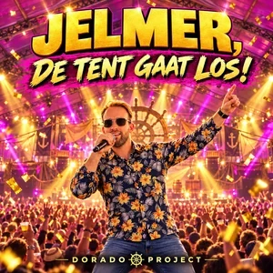

SINGLE · OP SPOTIFY
De tent gaat los!
Nederlandstalig
Een Nederlandstalige single van Dorado Project. Beluister De tent gaat los! op Spotify en ontdek meer muziek van het project.
Luister op Spotify →
SINGLE · OP SPOTIFY
Nederlandstalig
Een Nederlandstalige single van Dorado Project. Beluister De tent gaat los! op Spotify en ontdek meer muziek van het project.
Luister op Spotify →Van synthpop tot rock: ontdek de andere nummers en het verhaal achter Dorado Project.
Bekijk alle nummers →